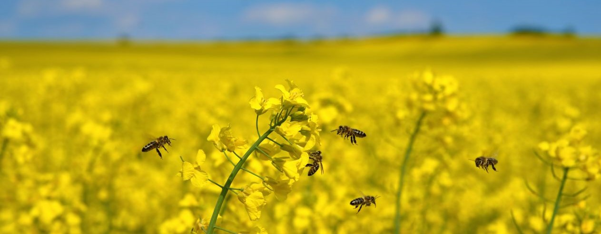
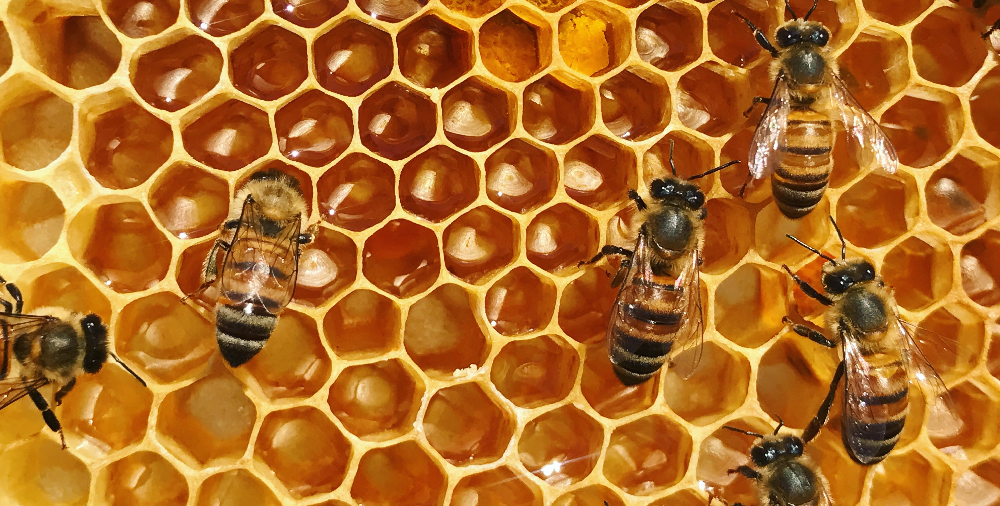
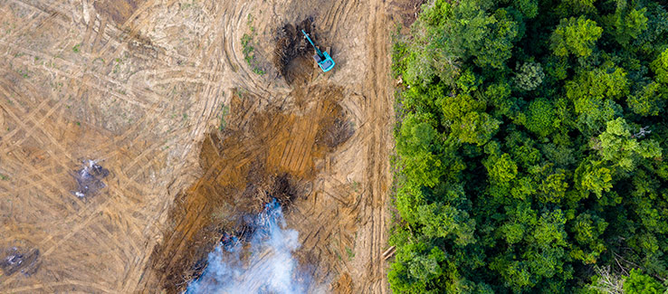

Pesticides
There are lots of pesticides that farmers are putting on their crops. The farmers are putting pesticides on their crops to avoid insects comming onto their plants and ruining the plants. The plants are their main source of food as they collect pollen and make honey from there. If there are pesticides there, then there would be no way they could have food and if they tried collecting food from the plants, they would get sick or die. They wouldn't have any source of food then. That would leave the problem to us. Their production will also make harm for us because they produce more food for us by pollinating our flowers. Their pollination on crops is a good thing but having these pestisides would be bad.

Destroying Bee Hives
Pesticides are not the only problem to bees. People are destroying bee's hives so that they can have room or space, or just get rid of bees. Bees are losing their homes by this and many bees end up having to make another hive or die from this. This also slows down or stops their honey production. Bees need the hive to make honey and to reproduce. They make their honey from the pollen they collect and they store it in the hive. Destroying the hive means destroying their honey and what they stored but also destroying the eggs and the larve that the Queen Bee produces. This would also be

Destroying Bee Habitats
Another way bees are losing their habitats are by deforestation and how people are destroying bees habitats. This is like the last two reasons except this is more devastating because bees lose their home and also their food source meaning they wont have any flowers to make honey and food and they wont have anywhere to store it aswell. This is a big problem but not only to bees, but for a lot of other species in other areas aswell.

<